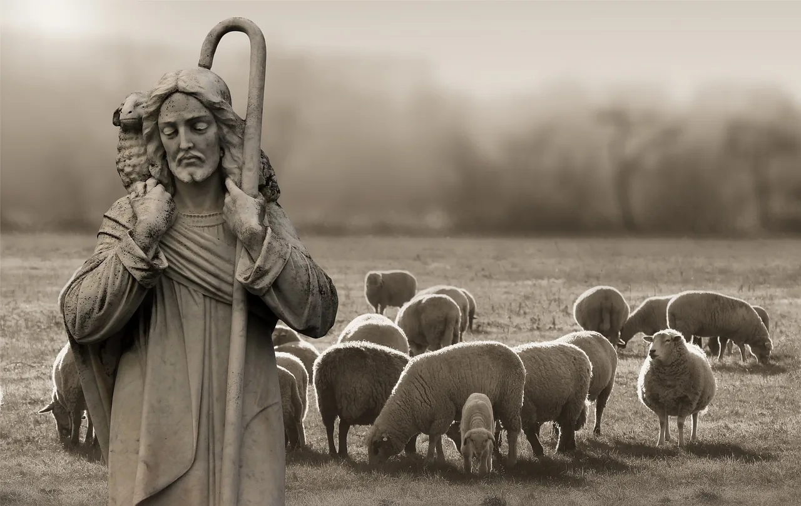
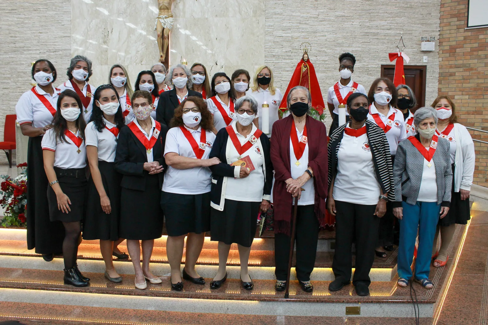
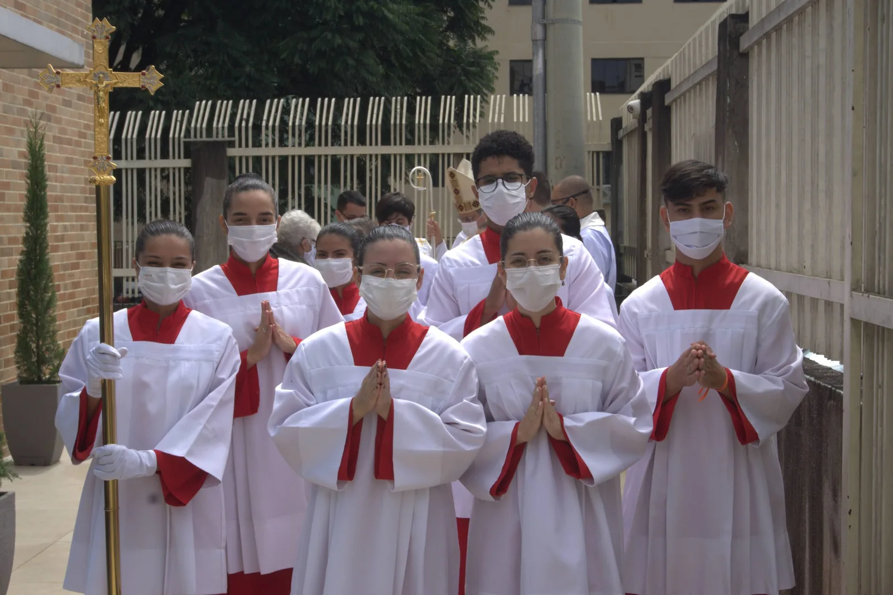

Mais de 20 pastorais, grupos e movimentos, nos quais a comunidade é convidada a participar onde se sentir chamada.
A palavra pastoral deriva de pastor, uma pessoa muito presente no mundo bíblico. A pastoral é uma ação da igreja católica, para que sejam desenvolvidas atividades para realização de missões, que consiste primeiramente em continuar a ação de Jesus Cristo.
A Missão pastoral resume-se em três grandes pilares:

O Apostolado da Oração, também conhecido como Rede Mundial de Oração do Papa, é uma rede mundial de oração a serviço dos desafios da humanidade e da missão da Igreja, expressos nas intenções mensais de oração do Papa.
Rezar por estas intenções abre-nos os olhos e o coração à dimensão do mundo, fazendo nossas as alegrias e esperanças, as dores e os sofrimentos de todos os nossos irmãos e irmãs.
Na nossa paróquia o apostolado foi fundado em 12 de outubro de 1998.
A reunião acontece toda primeira sexta-feira do mês após a missa das 19h, a qual somos responsáveis.
Se sinta convidado a fazer parte desta grande obra de evangelização.

A Catequese é o ensino da Palavra de Deus, especialmente do Evangelho do Messias e o encontro com sua Pessoa: “Ide, pois, e ensinai a todas as nações; batizai-as em nome do Pai, do Filho e do Espírito Santo. Ensinai-as a observar tudo o que vos prescrevi. Eis que estou convosco todos os dias, até o fim do mundo” (Mt 28, 19-20).
A Pastoral da Catequese é a responsável pela evangelização de crianças (a partir de 5 anos de idade), jovens e adultos. Os encontros semanais buscam levá-los a uma experiência com Deus, a partir da interação entre fé e vida, com o objetivo de atingir a maturidade cristã.
As inscrições se iniciam na segunda quinzena de janeiro, se estendendo até o final do mês de fevereiro, mediante pagamento de taxa e entrega da documentação necessária (cópia da Certidão de Nascimento ou RG; cópia da Lembrança de Batismo, para todos que já são batizados; cópia da Lembrança de Eucaristia, para todos que já receberam esse sacramento). Os catequizandos do ano anterior devem realizar renovação de inscrição, pagamento de taxa e entrega de documentação, se for o caso.
Lembramos que a catequese está presente em todas as idades e deve ser uma trajetória contínua de educação na fé. Por isso, é importante que os pais fomentem nas crianças desde cedo a vivência da fé cristã partilhada em comunidade.
Você sente o chamado a ser catequista? Se você já recebeu os sacramentos de iniciação cristã (Batismo, Eucaristia e Crisma) e reconhece o chamado por Cristo, para estar com Ele, para ser seu discípulo, para experimentar a graça do envio, para sair a anunciar, procure os coordenadores da Pastoral da Catequese.
Os cerimoniários da Paróquia São José desempenham um papel crucial na celebração das liturgias, garantindo que todos os rituais ocorram com a máxima reverência e ordem.
Seu compromisso inclui auxiliar o padre no altar, assegurando que todos os objetos litúrgicos estejam prontos e em conformidade com as normas da Igreja. Eles são encarregados de verificar o missal, o livro litúrgico que contém as orações e leituras da missa, para que a celebração siga o roteiro litúrgico estabelecido.
Na Igreja Católica surgiram historicamente para auxiliar no decoro e ordem durante as celebrações litúrgicas, desempenhando papéis importantes na organização dos ritos e no auxílio ao clero. Suas funções evoluíram ao longo dos séculos para acomodar as necessidades da igreja e da liturgia.
A Sociedade de São Vicente de Paulo (SSVP) é uma organização internacional de caridade que tem como objetivo ajudar as pessoas em situação de vulnerabilidade. A SSVP foi fundada em 1833, em Paris, por um grupo de jovens liderados por Frederico Ozanam, inspirados pelo carisma de São Vicente de Paulo.
O carisma da SSVP é baseado nos princípios da caridade, justiça e fraternidade. Os membros da SSVP, conhecidos como vicentinos, realizam visitas regulares às famílias carentes, oferecendo apoio material, emocional e espiritual. Eles também organizam campanhas de arrecadação de alimentos, roupas e recursos financeiros para ajudar aqueles que estão em necessidade.
As reuniões da Conferência Santa Teresa de Calcutá acontecem às segundas-feiras às 19h30 no centro catequético da igreja e as reuniões da Conferência Santa Rita de Cássia acontecem às quintas-feiras, também às 19h30 e no centro catequético da igreja. São momentos importantes para os vicentinos discutirem as necessidades da comunidade, planejarem ações de caridade e refletirem sobre seu compromisso com os mais necessitados.
O Grupo de Coroinhas é um movimento voltado para crianças e jovens que já tenham a sua Primeira Eucaristia. É um lugar onde a criança tem a oportunidade de servir a Igreja e desenvolver seu amor por Jesus Eucarístico.
Ser coroinha não é tão somente ajudar o padre na missa, mas viver a Liturgia e amar a nossa fé através da doação do servir.
Para ser um coroinha, primeiramente é necessário querer! Deve ser uma decisão conjunta com os pais logicamente, mas antes de mais nada deve vir da criança esse desejo.
Temos curso para novos coroinhas sempre no início do ano, com inscrições que iniciam em janeiro. O curso tem a duração de 2 meses e acontece aos sábados na parte da tarde. Após a criança se tornar uma coroinha, temos reuniões quinzenais de formação, que acontecem nas sextas-feiras.

O Encontro de Casais com Cristo (ECC) é um movimento religioso voltado a casais. Tem como objetivo a evangelização. Ajuda os casais a desenvolverem um relacionamento sadio, o entendimento da beleza e importância do Sacramento do Matrimônio.
O ECC é fundamentado nos pilares da Simplicidade, da Oração, da Doação, da Alegria e da Pobreza. Esse belíssimo movimento está à disposição do serviço apostólico, que tem por missão levar o evangelho às famílias, tornar Jesus conhecido, propagar o seu amor.
O ECC prepara as famílias para viver como famílias cristãs, testemunho de vida e de fé. Desperta os cristãos para o serviço pastoral, os torna colaboradores da missão salvífica de Jesus.
Para participar é simples: junte-se a nós no encontro anual de três dias e faça parte desse movimento.
O grupo de jovens JUSES (Juventude Sustentada pelo Espírito Santo), fundado pelo querido Paulo Noé de Alcântara Filho no ano de 2006, foi inicialmente uma ideia de juntar alguns jovens na Paróquia para evangelizar.
No começo, foi um trabalho bem árduo, mas ao longo do tempo foi ganhando forma com as suas reuniões e com uma de suas atividades mais importantes, o Retiro Nova Geração. Esse retiro é realizado anualmente e é a porta de entrada para muitos jovens na Igreja Católica Apostólica Romana.
Como padroeira do nosso grupo, quem está sempre intercedendo por nós e quem nos escolheu, é o título de Nossa Senhora do Carmo. Igualmente é ela quem nos ajuda a manter os três pilares do grupo: Oração, Estudo e Vida Fraterna.
Como forma de manter a espiritualidade do grupo, realizamos terços nas casas, passeios e atividades internas e externas.
Ana Beatriz Rique Matheus e Andressa Fernandes Gonçalves, atuais coordenadoras do JUSES, convidamos você jovem a participar e ter uma experiência no nosso grupo. Nossas reuniões acontecem toda quarta à noite e com muita alegria te receberemos.
As Guardiãs da Eucaristia são uma pastoral responsável por cuidar e zelar de Jesus Eucarístico. Na Santa Missa, as Guardiãs ficam atentas, desde o momento da consagração, para garantir que será tomado o devido cuidado com a Eucaristia, zelando e guardando o corpo de Cristo.
Para ser uma guardiã, é necessário ter o Sacramento do Crisma, pois é a confirmação de nossa fé.
Quer ser uma guardiã? Entre em contato com a Secretaria Paroquial.
A Legião de Maria é uma associação de católicos que tem como objetivo levar Jesus através de Maria. Com evangelização, acolhimento às famílias e oração!
As reuniões acontecem às terças-feiras, de 15 em 15 dias, às 15h na sala do Centro Catequético.
O Ministro Extraordinário da Sagrada Comunhão é um leigo ou leiga a quem é dada a permissão de distribuir a comunhão aos fiéis na missa ou fora da missa em situações de enfermidades, velhices e dificuldade de locomoção, administrar o viático, fazer exposição do Santíssimo Sacramento, mas sem a benção, e presidir a celebração da palavra na ausência do sacerdote ou diácono.
A idade mínima para ser um mesce é de 21 anos e a escolha se dá por indicação de outros mesce ao pároco, onde a pessoa faz uma formação inicial para começar a exercer seu ministério e depois continua fazendo todos os anos uma formação permanente.
O Núcleo de Estudos São José tem por objetivo ser instrumento de formação permanente para a comunidade.
Sabei dar a razão da vossa esperança (1Pd 3,15).
Os encontros ocorrem no auditório do centro catequético da paróquia. As programações anuais dos encontros são divulgadas nas missas e nas redes sociais da paróquia e as inscrições são abertas em fevereiro de cada ano.
A Oficina de Oração e Vida ensina um método prático para aprender a orar e orar de uma maneira ordenada, variada e progressiva: desde os primeiros passos até as profundidades da contemplação.
As Oficinas são um método de evangelização que está integralmente baseado na Palavra de Deus. O ponto central de cada reunião é a leitura e a meditação da palavra.
A oficina ocorre em datas específicas no ano. Para mais informações, entre em contato com a secretaria paroquial.
A Pastoral da Comunicação (PasCom) busca, por meio da comunicação, seja pessoal ou por outros meios, anunciar o evangelho, promover a comunhão dentro da igreja, entre os fiéis, o clero, as pastorais, movimento e comunidade externa.
A PasCom é comunhão, é ligação entre as atividades, pastorais, movimentos, associações que existem na comunidade, bem como com os meios de comunicação (mídias sociais, jornais de bairro, rádios comunitárias, etc.), dando pulsação nas atividades e sendo comunhão entre elas.
Sendo assim, a missão da PasCom da Paróquia São José é evangelizar a partir de uma comunicação mais fraterna, tendo como objetivo concreto promover a cultura católica na comunidade paroquial, fazendo isso a partir de eventos que promovam oportunidades de diálogo, divulgando e registrando as atividades paroquiais, evangelizando através das mídias sociais e desenvolvendo ferramentas que tornem as atividades mais efetivas.
Para ser agente da PasCom, basta ter interesse em atuar e/ou aprender a realizar atividades relacionadas à comunicação (escrever, fotografar, mediar redes sociais, organizar eventos, planejar, filmar, etc). Não há necessidade de ter habilidades prévias. Para mais informações entre em contato com um dos membros da pastoral ou com a secretaria paroquial.
“A Pastoral da Acolhida é parte integrante do processo de evangelização da paróquia, porque ajuda a revelar, nos seus membros e nas ações por ela desenvolvidas, o rosto acolhedor de Jesus, cheio de misericórdia e compaixão.
A acolhida como graça não espera nada em troca, simplesmente porque ama e quer que todos estejam unidos.
Por isso, a Pastoral da Acolhida, antes de ser um trabalho, uma tarefa ou mais uma pastoral, é uma atitude evangélica que brota de um coração convertido pelo amor misericordioso do pai; é uma ação concreta que ajuda as pessoas a se sentirem mais importantes, a se verem como filhos e filhas de Deus.”
Retirado do livro de José Carlos Pereira, livro de formação da Pastoral da Acolhida.
Ficamos no acolhimento de todas as missas de finais de semana e as missas solenes.
Papel evangelizador: se envolver com as Missas, festas da Igreja. Devemos nos direcionar para as celebrações, comentaristas, leitores, música e todos os envolvidos na celebração, e ainda ser apoio às pastorais responsáveis no que for necessário. Não devemos enterrar nossos dons, e sim colocá-los a serviço.
Reunião: mensal, na quarta-feira, após a reunião do CPP, no Centro Catequético.
Missas responsáveis:
A Pastoral da Saúde é a ação evangelizadora de todo o povo de Deus, comprometido em promover, preservar, defender, cuidar e celebrar a vida, tornando presente no mundo de hoje a ação libertadora de Cristo na área da saúde.
Tem como objetivo evangelizar com renovado ardor missionário o mundo da saúde, à luz da opção preferencial pelos pobres e enfermos, participando da construção de uma sociedade justa e solidária a serviço da vida. A pastoral também tem como missão promover, preservar, defender, cuidar e celebrar a vida.
Em nossa paróquia a pastoral atua nas visitas aos idosos e enfermos da comunidade. No Hospital do Guará, todas as segundas-feiras, rezam com os doentes o Santo Terço e nas quintas-feiras são responsáveis pela Santa Missa.
Para fazer parte da Pastoral da Saúde, procure um membro da equipe ou a secretaria paroquial. As reuniões acontecem quinzenalmente nas terças-feiras às 19h30.
O Batismo é o primeiro sacramento da Iniciação Cristã. Sem o Batismo não se pode receber nenhum outro sacramento. Quando Cristo enviou a seus Apóstolos por todo o mundo, disse-lhes: “Ide, pois, e fazei discípulos a todas as gentes, batizando-as em nome do Pai e do Filho e do Espírito Santo” (Mateus 28,19). “O que crer e for batizado, será salvo; mas o que não crer, será condenado” (Marcos 16,16).
A Pastoral do Batismo da Paróquia São José do Lúcio Costa Guará realiza o Encontro de Pais e Padrinhos para o Batismo todo primeiro sábado do mês. O batizado é celebrado no terceiro domingo, após a Missa das 10h00. Para ser padrinho de Batismo precisa ser crismado e levar uma vida de verdadeiro cristão.
O objetivo do Encontro de Pais e Padrinhos é conscientizar pais e padrinhos do que é o Batismo, e qual o compromisso que através dele se assume com Deus e com a comunidade paroquial. É demonstrar que este sacramento não se resume apenas em batizar. É necessário vivenciar, testemunhar e ensinar filhos e afilhados a serem cristãos autênticos e fiéis seguidores de Jesus Cristo.
O padrinho e a madrinha são vistos como pais espirituais, pois assumem o compromisso de se responsabilizar pela formação cristã do afilhado. Em caso da falta dos pais, os padrinhos assumem a educação cristã do afilhado, tendo como referência o princípio cristão. Os temas trabalhados no Encontro de Pais e Padrinhos procuram conscientizar para o verdadeiro comprometimento que eles deverão assumir diante da Igreja e de Deus.
Para ingressar na Pastoral do Batismo é preciso ser crismado e assumir o compromisso de estudar a Igreja Católica, as Sagradas Escrituras, o Catecismo, o Rito do Batismo e levar uma vida de cristão.
A Pastoral do Dízimo tem como missão promover a conscientização sobre a necessidade e importância do Dízimo em nossa comunidade e são responsáveis pelo atendimento à comunidade no balcão do dízimo.
A pastoral é responsável por selecionar mensalmente os nomes dos aniversariantes dizimistas que são afixados no mural do balcão do dízimo, além de serem incluídos nas intenções da Santa Missa. Os dizimistas aniversariantes recebem também um cartão assinado pelo padre Olmer.
No final de cada ano são entregues cartões de Natal e um calendário para todos os dizimistas.
Saiba mais: o dízimo é uma expressão de gratidão a Deus por tudo o que recebemos. É uma contribuição voluntária, regular, periódica e proporcional aos rendimentos recebidos, que todo batizado deve assumir como sua obrigação em relação à manutenção da vida da igreja.
O dízimo possui quatro dimensões: religiosa, eclesial, missionária e caritativa.
A primeira dimensão do dízimo é a RELIGIOSA: tem a ver com a relação do cristão com Deus. Contribuindo com parte de seus bens, o fiel cultiva e aprofunda sua relação com aquele de quem provém tudo o que ele é e tudo o que ele tem, e expressa, na gratidão, sua fé e sua conversão.
O dízimo também tem uma dimensão ECLESIAL. Com o dízimo o fiel vivencia sua consciência de ser membro da Igreja, pela qual é corresponsável, contribuindo para que a comunidade disponha do necessário para realizar o culto divino e para desenvolver sua missão.
O dízimo tem uma dimensão MISSIONÁRIA. O fiel, corresponsável por sua comunidade, toma consciência de que há muitas comunidades que não conseguem prover suas necessidades com os próprios recursos e que precisam da colaboração de outras.
O dízimo tem ainda uma dimensão CARITATIVA, que se manifesta no cuidado com os pobres, por parte da comunidade. Uma das características das primeiras comunidades cristãs era de que “entre eles ninguém passava necessidade”, pois tudo era distribuído conforme a necessidade de cada um.
A Pastoral Familiar é um serviço que se realiza na Igreja e com a Igreja, de forma organizada e planejada através de agentes específicos, com metodologia própria, tendo como objetivo apoiar a família a partir da realidade em que se encontra, para que possa existir e viver dignamente, estabelecer relacionamentos e formar as novas gerações conforme o plano de Deus.
Abrange todas as famílias, independente de sua situação familiar, com o propósito de promover a inclusão e resgatar os valores e a dignidade de cada pessoa. A missão da pastoral é a defesa e promoção da pessoa em todas as etapas e circunstâncias da vida e a defesa dos valores cristãos para o matrimônio e os relacionamentos pessoais e familiares.
Para saber como fazer parte da pastoral, procure um membro da equipe ou a secretaria paroquial. As reuniões ocorrem toda quinta-feira, às 20h00.
O Grupo de Oração Pentecostes, fundado no ano de 1998, na Paróquia São José, faz parte do Movimento Eclesial da Renovação Carismática: “A corrente de graça”, como bem definiu o Papa Francisco, na 37ª Convocação da Renovação na Itália, em 2014.
A Renovação Carismática nasceu “de um desejo do Espírito Santo como uma corrente de graça na Igreja e para a Igreja” e, por meio da difusão da Cultura de Pentecostes e da graça do batismo no Espírito Santo, somos chamados a construir a grande Civilização do Amor.
Ser Renovação Carismática Católica é ser Igreja, é reconhecer-se filho de Deus, mas é também estar a serviço do bem comum em conformidade com o Evangelho do Senhor.
O grupo se reúne na nave paroquial todas as quintas-feiras, das 20h00 às 21h30. Participe conosco!!
O movimento SEGUE-ME surge como resposta ao chamado de amor e salvação de Cristo, propondo-se a despertar nos jovens uma visão cristã da realidade e incentivá-los a adotar responsabilidades alinhadas com os ensinamentos do Evangelho.
Seus principais objetivos incluem proporcionar orientação catequética, envolver os jovens em pastorais nas paróquias, ajudar na descoberta da vocação ao serviço, seja na igreja, na vida religiosa, no matrimônio cristão, ou no serviço à família e sociedade.
Além disso, o movimento busca ser um instrumento evangelizador, promovendo o diálogo e entendimento entre jovens e adultos para fortalecer os laços familiares e comunitários.
Para participar é simples: junte-se a nós no encontro anual de três dias e faça parte desse movimento transformador.
No Brasil, o Terço dos Homens foi fundado pelo Frei Peregrino no dia 08 de setembro de 1936 no povoado de Providência, hoje cidade de Itabi, no estado de Sergipe.
Mesmo com relatos da primeira metade do século XX, o Terço dos Homens começou de maneira institucional ao final dos anos 90 entre as paróquias de cidades do nordeste do país. Desde então, foi ganhando unidade entre as paróquias vizinhas até chegar ao sudeste, ao sul e outras regiões do país.
Na Paróquia São José, teve início em 03 de junho de 2008, com a coordenação do paroquiano Sr. João Barbosa, sendo pároco Padre Olmer Guerrero Garcia, ficando a terça-feira, após a Missa, como dia da celebração.
A oração do Terço por comunidades de homens é uma maneira extremamente produtiva de criar um vínculo, pois mais do que acompanhar o rosário, esse é o espaço onde muitas graças são compartilhadas.
No dia 20/04/2023, foi publicada no Diário Oficial da União a instituição do Dia Nacional do Terço dos Homens, celebrado em 08 de setembro. Esta data foi escolhida por ter sido a primeira manifestação do movimento no Brasil.